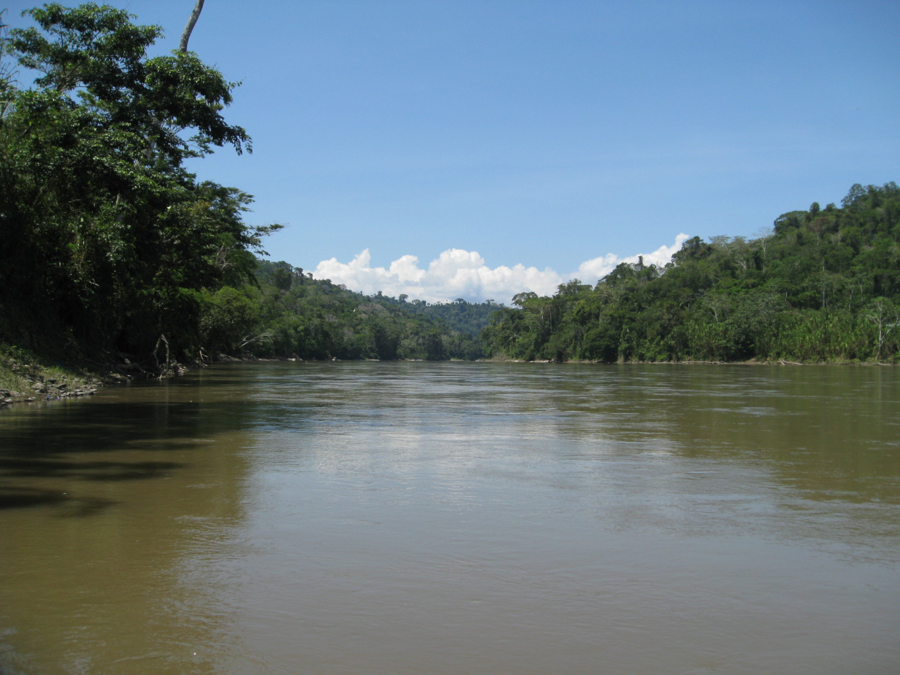

La expedición de Magallanes y Elcano fue una expedición marítima del siglo XVI financiada por la Corona Española y capitaneada por Fernando de Magallanes. Esta expedición, al mando de Juan Sebastián Elcano en su retorno, completó la primera circunnavegación de la Tierra de la historia.
A escuadra partió de Sevilla el 10 de agosto de 1519, saliendo del muelle de las Mulas, en el río Guadalquivir, cerca del lado oeste del actual puente de San Telmo. La flota descendió por el Guadalquivir hasta llegar a su desembocadura, en Sanlúcar de Barrameda (Cádiz), puerto del océano Atlántico. Durante las siguientes semanas, Fernando de Magallanes y los capitanes de las naos (barcos) iban y venían a Sevilla en sus falúas (barcos) para atender diversos imprevistos y allanar algunas dificultades mientras se acabó de avituallar la escuadra. El propio Magallanes otorgó testamento en Sevilla el 24 de agosto.
A continuación, tendrás que contestar 3 preguntas relacionadas con la historia que acabas de leer. Para cada pregunta tendrás 40 segundos. Cada pregunta tendrá una respuesta correcta y dos incorrectas y en función del tiempo que tardes tendrás más o menos puntuación.